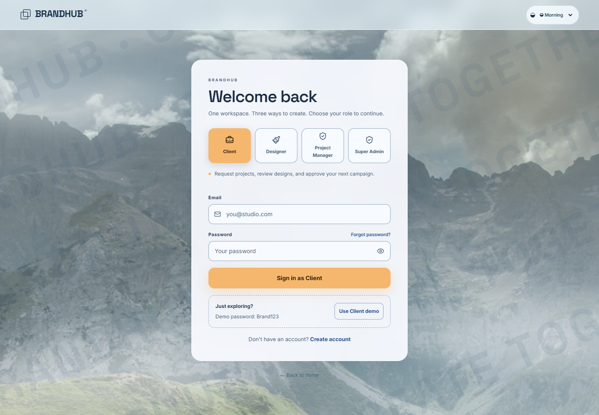
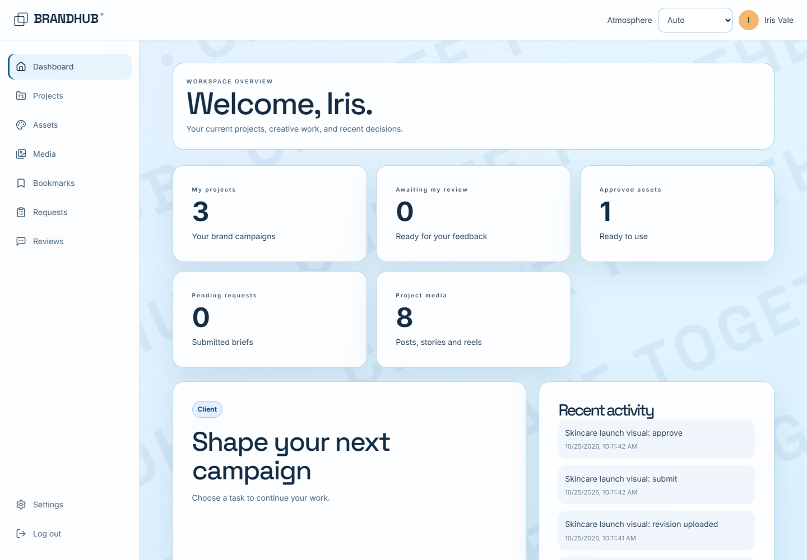
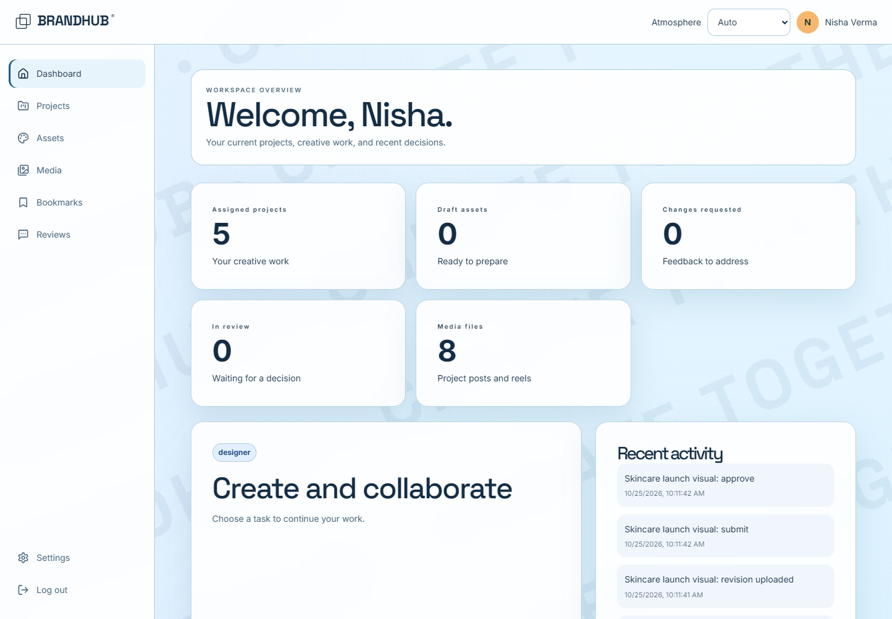

BrandHub · Prototype review · 25 October 2026Clearer design.
Stricter access. Verified flows.
PASS · tested scope73automated tests passed
52browser route checks
11blocked-access checks
0browser page errors
Client, Designer and Admin now have explicit login choices. The backend verifies the saved account role. The glass UI includes diagonal BrandHub branding with stronger contrast and responsive layouts.

Frontend and backend checks
- Empty login shows an actionable error
- Wrong role login returns 403 and stays on login
- Admin user search returns the matching client
- Admin combined search and role filter handles empty results
- Project search and clear filters update the list
- Client media gallery hides the upload action
- Client project API contains only the signed-in client allocation
All four themes and mobile navigation were checked. The browser observed 260 successful API responses, six expected pre-login authentication responses, and no server errors.
Workflow and permissions
Client brief → admin acceptance and assignment → designer upload → client change request → revised upload → final approval. The GridFS regression verifies file bytes, two revisions, five review events, admin history access, and denial for unrelated clients.
All six wrong-role login combinations return 403 without creating a session. Clients cannot upload, edit, or delete creative media, administer users, or change project allocation.
Client workspace

Designer workspace

Organization and evidence
The project now has dedicated access configuration, shared role types, branding components, a visual stylesheet, and repeatable browser audits. Read the folder guide.
Full test report and issue log · Browser results · Interactive results
Build and lint passed. Email delivery is not configured and those pages show that limitation. No deployed URL was tested. This review covers the listed prototype scenarios. GitHub push remains pending the earlier destination/branch approval.